<ion-content>
    <div class="container">
        <div class="logo-style">
            
        </div>
        <div class="arrow-back">
            
        </div>
    </div>
    <div class="img-preliminary">
        
    </div>
    <div class="container-radio">


        <div class="flex">
            <ion-radio-group value="biff">
                <ion-item>
                    <ion-label class="text-radio" color="primary">Preliminary</ion-label>
                    <ion-radio class="radio" color="primary" slot="start"></ion-radio>
                </ion-item>
            </ion-radio-group>
        </div>

        <div class="flex">
            <ion-radio-group value="biff">
                <ion-item>
                    <ion-label class="text-radio">Process </ion-label>
                    <ion-radio class="radio" slot="start"></ion-radio>
                </ion-item>
            </ion-radio-group>
        </div>

        <div class="flex" (click)="next()">
            <ion-button size="large">Next</ion-button>
        </div>


    </div>

</ion-content>